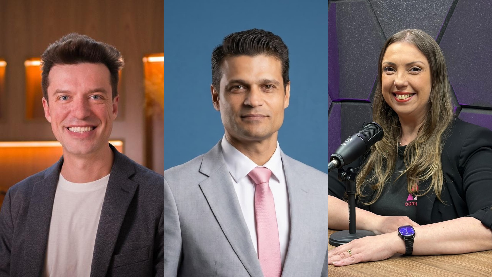

Inteligência Artificial
Resende sediará encontro sobre inteligência artificial e negócios durante o FIND 2026
17/11/2026 às 05:29 (horário de Brasília)

O município fluminense de Resende recebe nesta terça-feira (24), no Boa Vista Hall, o Summit Rio Sul 2026. Focado nos avanços e impactos da inteligência artificial sobre a atividade empresarial e industrial, o encontro faz parte da grade do Festival de Inovação, Desenvolvimento e Empreendedorismo de Resende (FIND 2026).
A conferência é fruto de parceria entre a TV Rio Sul, a Universidade do Estado do Rio de Janeiro (UERJ), a Prefeitura de Resende e a Federação das Indústrias do Estado do Rio de Janeiro (Firjan). Entre as metas está reunir executivos, acadêmicos e autoridades regionais para discutir cibersegurança e aplicações produtivas de novas tecnologias.
A programação contará com apresentações do especialista Arthur Igreja, do engenheiro Wilson Miguel Sechi, da pesquisadora Fabiana Raulino e da especialista em cibersegurança Fernanda Dogiec. O festival prosseguirá no dia seguinte com painéis voltados a incentivos à inovação, aspectos legais de startups e demonstrações de ferramentas corporativas.